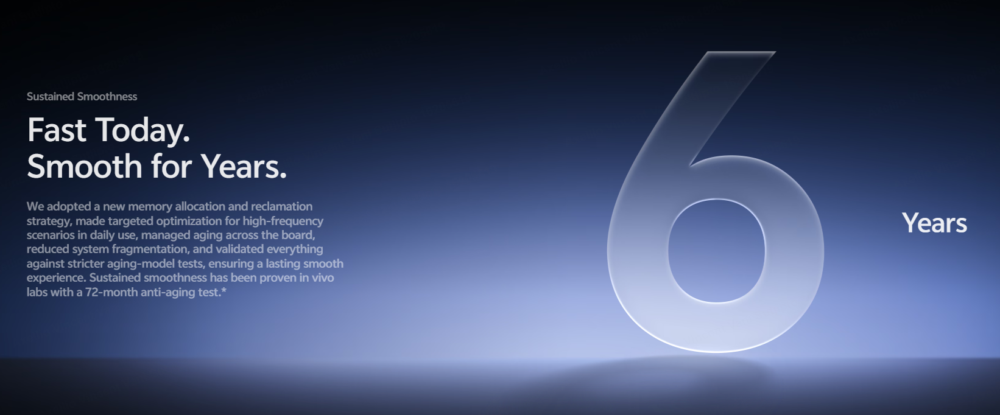
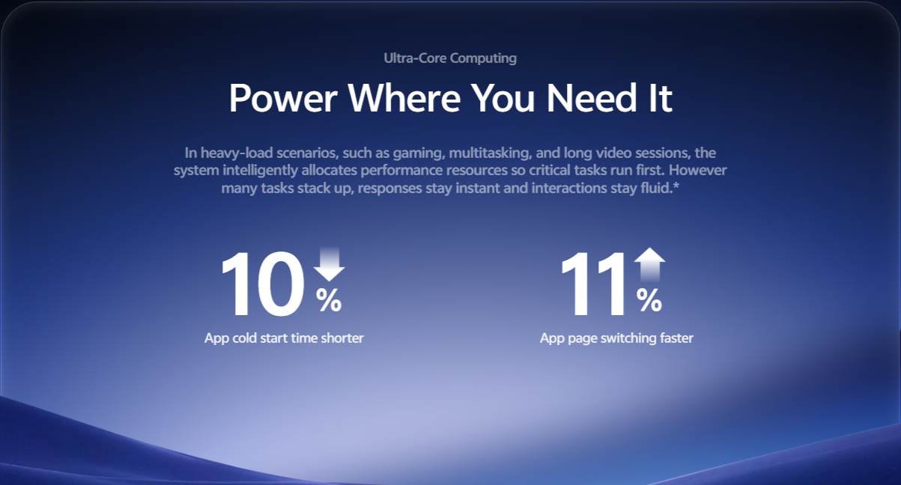
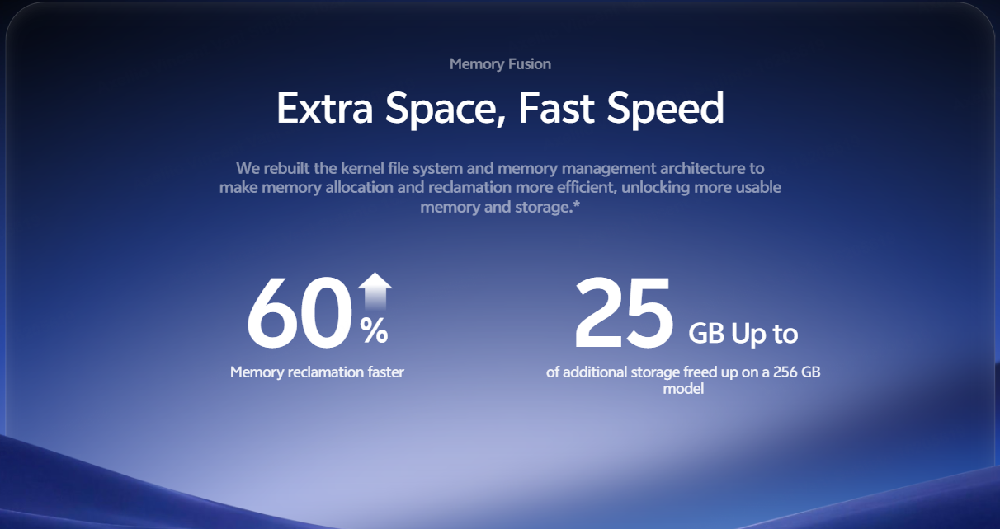
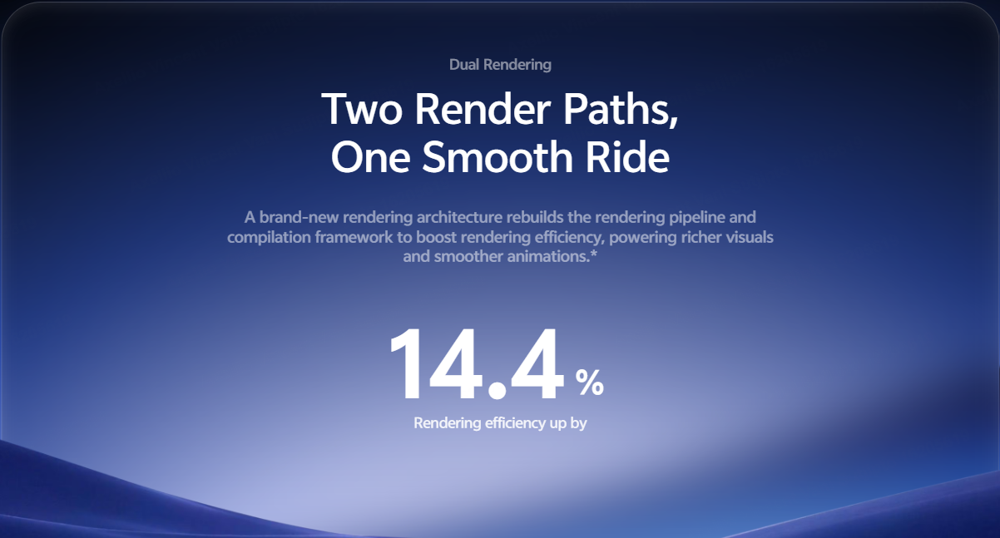

2.1 OS Smoothness
OriginOS treats touch response, window movement, and rendering efficiency as one continuous experience.
◎ Key Insights
- 1
The fluid motion language runs from the lock screen into apps, so the promise is a system-wide feel rather than a single showcase animation.
- 2
Spring response changes with gesture speed and direction. The quality of interruption and reversal matters as much as animation speed.
- 3
Origin Workbench and Snap-Up Engine connect smoothness to multitasking and time-sensitive actions, while vivo also makes longer-term performance claims.
✳ Further Thoughts
- 1
Smoothness is not simply about speed. Truly natural interactions require system animations, content transitions, and finger movements to remain perfectly synchronized.
- 2
Origin Workbench is the most important showcase of the underlying technology. Performance metrics can be difficult for users to perceive directly, whereas persistent app states across multiple applications make the benefits immediately tangible.
- 3
Long-lasting smoothness is a key user concern.
2.1.1 Fluid Motion
A continuous visual languageThe first three clips show how system elements reshape rather than abruptly disappear: a home-screen press, a reading or editing surface, and controls in several apps. Their shapes separate and merge, keeping the next action visually connected to the last.
The point is continuity across different surfaces. Watch where a control begins, how it follows the finger, and where it settles. The wide third clip gives a broader view of the same animation language; it is part of this feature, not a separate performance claim.
Review on device: interrupt a gesture or switch apps mid-flow. The transition should remain understandable when it is not played as a perfect demo.
2.1.2 Spring Animation
Response changes with speedSpring Animation adjusts the bounce of components and cards to the way the user moves. A quick swipe is meant to resolve crisply; a slower one comes to rest more gently.
The theme-card clip makes this visible in a familiar choice flow. Look at the movement after the swipe stops: a natural response should suggest the card's weight without delaying the next action.
Review on device: compare fast, slow, reversed, and interrupted swipes, including at reduced-motion settings.
2.1.3 Seamless Interaction
Navigation follows the gestureThis clip uses a shopping interface to demonstrate movement through content. vivo's stated goal is that vertical and horizontal navigation can change direction without a jarring handoff.
That is a different question from the spring effect above. Here the test is whether the system keeps the user's place and responds predictably when the direction changes or a swipe ends early.
Review on device: repeat the flow in third-party apps, where touch handling may differ from built-in surfaces.
2.1.4 Origin Workbench
Several tasks, one working stateOrigin Workbench keeps multiple windows within reach. The clip moves among tasks while preserving their place, so switching back does not require starting over.
The value lies in a complete task: locate information in one window, use it in another, then return to the first. Window movement is the visible layer; state retention and responsiveness determine whether the workflow is useful.
Review on device: try the same sequence with the app combinations and memory tiers sold locally.
2.1.5 Sustained Smoothness & Performance
The system behind the motionThe accompanying visuals cover vivo's longer-term smoothness, scheduling, memory, and rendering claims. These explain the engineering story behind the short interaction clips, but they are evidence of stated targets rather than a substitute for local tests.
Snap-Up Engine belongs to this performance track: vivo says it recognizes ticket-sale moments and prioritizes resources through tapping and payment. Its effect cannot be inferred from the animation clips above.




Review on device: test heat, load time, interruptions, and third-party ticket flows on local networks; check the claim against the exact supported model.
Feature register
UI elements deform, separate, merge, and spring back with gestures, from the lock screen into apps.
System components react to swipe speed and direction, with softer response when the gesture slows.
Open several windows and switch tasks without losing the working state.
Recognizes ticket-sale scenarios and tunes network and performance resources for the critical steps.
The smoothness story also includes longer-term stability, launch speed, memory, and rendering efficiency claims.